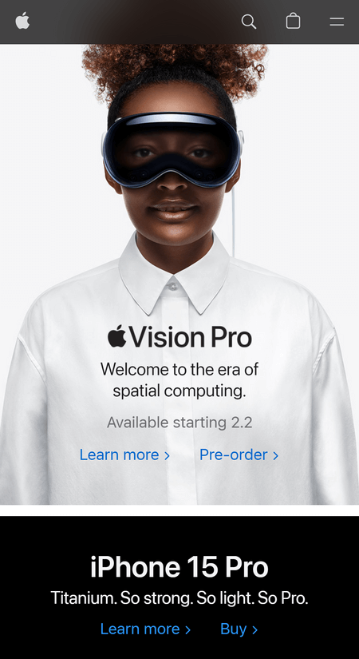
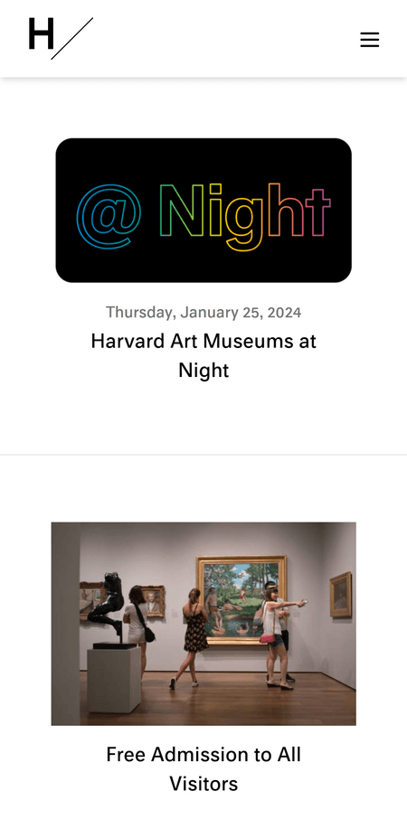

PARC: Alignment
Templeton Prize
The Templeton Prize website is an example of PARC: Alignment. They use a standard left-aligned layout. It has a straightforward layout.
Rule of Thirds
Apple
Apple is one of the examples that uses the rule of thirds in their website to draw attention to their products. Using a grid layout for important information, they have product names and descriptions.
White Space and Clean Design
Harvard Art Museums
The Harvard Art Museums use the whitespace to maintain a minimal aesthetic feel to their website. The website helps the user focus on the art pieces.